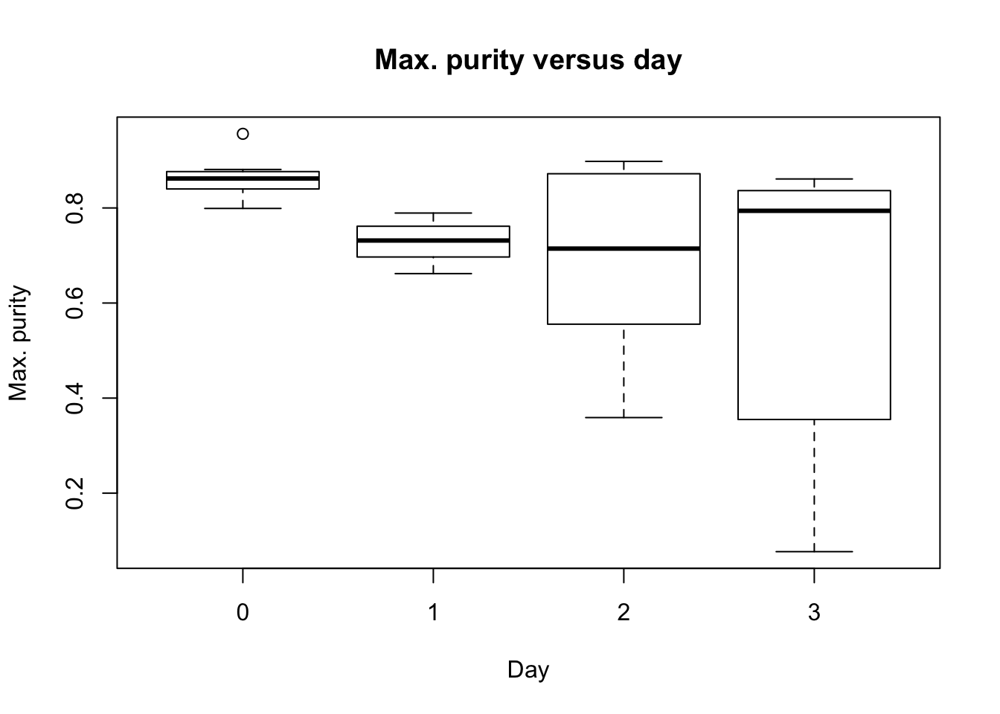
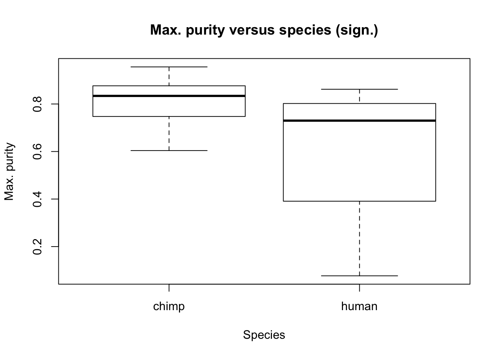
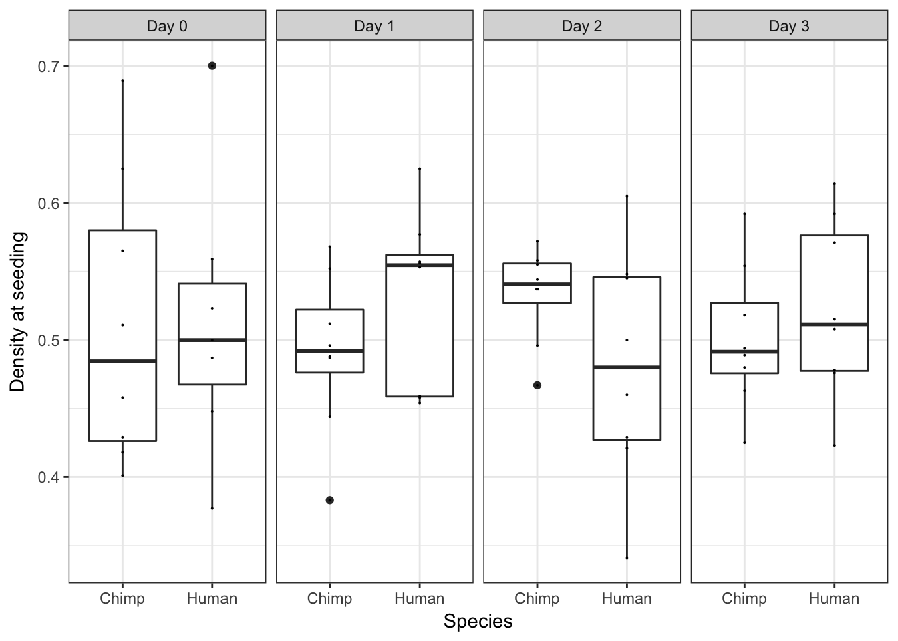
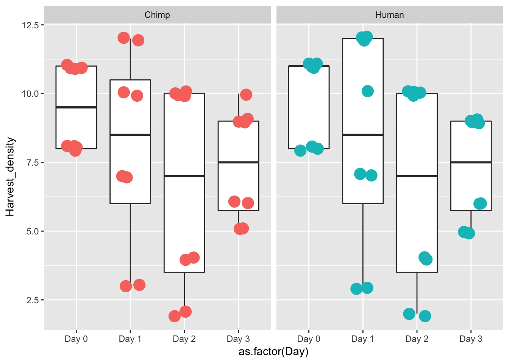
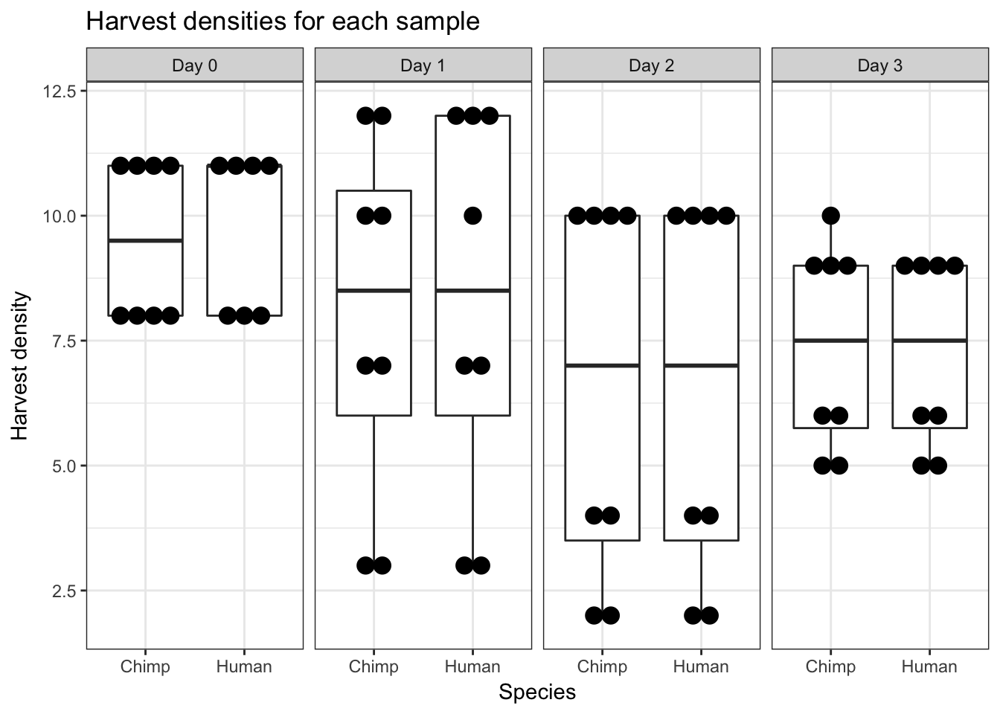
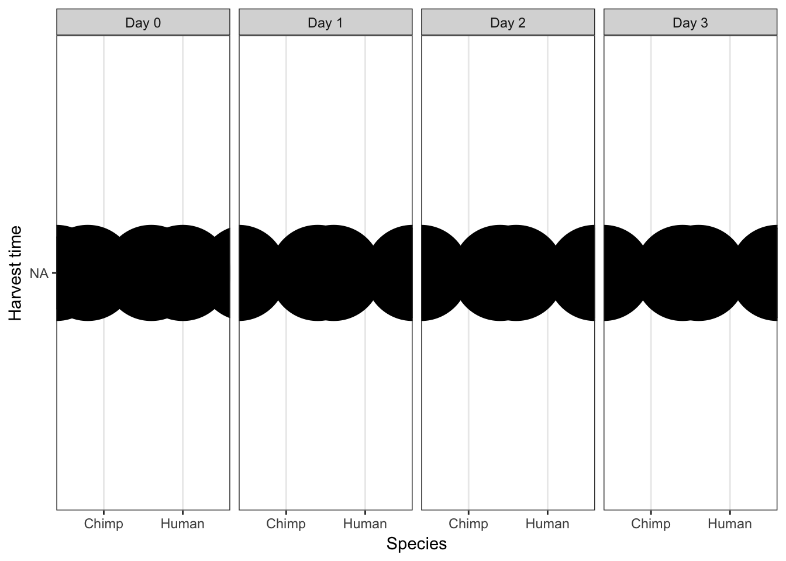

The goal of this is to establish which, if any, technical factors are correlated with our biological variables of interest.
# Load libraries
library("gdata")## gdata: read.xls support for 'XLS' (Excel 97-2004) files ENABLED.## ## gdata: read.xls support for 'XLSX' (Excel 2007+) files ENABLED.##
## Attaching package: 'gdata'## The following object is masked from 'package:stats':
##
## nobs## The following object is masked from 'package:utils':
##
## object.sizelibrary("ggplot2")## Warning: package 'ggplot2' was built under R version 3.2.4library("qvalue")## Warning: package 'qvalue' was built under R version 3.2.3library("glmnet")## Warning: package 'glmnet' was built under R version 3.2.4## Loading required package: Matrix## Warning: package 'Matrix' was built under R version 3.2.5## Loading required package: foreach## Loaded glmnet 2.0-5source("~/Desktop/Endoderm_TC/ashlar-trial/analysis/chunk-options.R")## Warning: package 'knitr' was built under R version 3.2.5# Load cpm data
cpm_in_cutoff <- read.delim("~/Desktop/Endoderm_TC/ashlar-trial/data/cpm_cyclicloess.txt")
# Load sample information
After_removal_sample_info <- read.csv("~/Desktop/Endoderm_TC/After_removal_sample_info.csv")
Species <- After_removal_sample_info$Species
species <- After_removal_sample_info$Species
day <- After_removal_sample_info$Day
individual <- After_removal_sample_info$Individual
Sample_ID <- After_removal_sample_info$Sample_ID
labels <- paste(Sample_ID, day, sep=" ")
# Load technical factor information
RNA_seq_info_all <- read.csv("~/Desktop/Endoderm_TC/ashlar-trial/data/Endo_TC_Data_Share_Sorting.csv", header = T)
dim(RNA_seq_info_all)## [1] 999 43RNA_seq_info <- as.data.frame(cbind(RNA_seq_info_all[1:63, 4], RNA_seq_info_all[1:63, 3], RNA_seq_info_all[1:63, 5:27], RNA_seq_info_all[1:63, 30:35], RNA_seq_info_all[1:63, 37:43]))
# Remove day (biological variable of interest)
RNA_seq_info <- RNA_seq_info[,-8]
# Remove library well (only 1/well)
RNA_seq_info <- RNA_seq_info[,-19]
# Full data set
dim(RNA_seq_info)## [1] 63 36# PCs
pca_genes <- prcomp(t(cpm_in_cutoff), scale = T, retx = TRUE, center = TRUE)
matrixpca <- pca_genes$x
pc1 <- matrixpca[,1]
pc2 <- matrixpca[,2]
pc3 <- matrixpca[,3]
pc4 <- matrixpca[,4]
pc5 <- matrixpca[,5]
pcs <- data.frame(pc1, pc2, pc3, pc4, pc5)
summary <- summary(pca_genes)#Create plots for each of the possible confounders versus PCs 1-5
pdf('~/Desktop/Endoderm_TC/ashlar-trial/data/VarVsGenePCs.pdf')
for (i in 2:length(RNA_seq_info)) {
par(mfrow=c(1,5))
plot(RNA_seq_info[,i], pcs[,1], ylab = "PC1", xlab = " ")
plot(RNA_seq_info[,i], pcs[,2], ylab = "PC2", xlab = " ")
plot(RNA_seq_info[,i], pcs[,3], ylab = "PC3", xlab = " ")
plot(RNA_seq_info[,i], pcs[,4], ylab = "PC4", xlab = " ")
plot(RNA_seq_info[,i], pcs[,5], ylab = "PC5", xlab = " ")
title(xlab = substitute(paste(k), list(k=colnames(RNA_seq_info)[i])), outer = TRUE, line = -2)
mtext(substitute(paste('PCs vs. ', k), list(k=colnames(RNA_seq_info)[i])), side = 3, line = -2, outer = TRUE)
}
dev.off()quartz_off_screen
2 # TESTING BIOLOGICAL VARIABLES OF INTEREST
PC_pvalues_day = matrix(data = NA, nrow = 5, ncol = 1, dimnames = list(c("PC1", "PC2", "PC3", "PC4", "PC5"), c("Day")))
for(i in 1:5){
# PC versus day
checkPC1 <- lm(pcs[,i] ~ as.factor(day))
#Get the summary statistics from it
summary(checkPC1)
#Get the p-value of the F-statistic
summary(checkPC1)$fstatistic
fstat <- as.data.frame(summary(checkPC1)$fstatistic)
p_fstat <- 1-pf(fstat[1,], fstat[2,], fstat[3,])
PC_pvalues_day[i,1] <- p_fstat
#Fraction of the variance explained by the model
r2_value <- summary(checkPC1)$r.squared
}
# PC versus species
PC_pvalues_species = matrix(data = NA, nrow = 5, ncol = 1, dimnames = list(c("PC1", "PC2", "PC3", "PC4", "PC5"), c("Species")))
for(i in 1:5){
# PC versus species
checkPC1 <- lm(pcs[,i] ~ as.factor(species))
#Get the summary statistics from it
summary(checkPC1)
#Get the p-value of the F-statistic
summary(checkPC1)$fstatistic
fstat <- as.data.frame(summary(checkPC1)$fstatistic)
p_fstat <- 1-pf(fstat[1,], fstat[2,], fstat[3,])
PC_pvalues_species [i,1] <- p_fstat
#Fraction of the variance explained by the model
r2_value <- summary(checkPC1)$r.squared
}
# TESTING TECHNICAL VARIABLES OF INTEREST
#Make an empty matrix to put all of the data in
# Note: Do not include TC day, as it is a biological variable of interest
PC_pvalues = matrix(data = NA, nrow = 5, ncol = 35, dimnames = list(c("PC1", "PC2", "PC3", "PC4", "PC5"), c("Cell line", "SPSX", "Batch", "Passage at seed", "Start date", "Density at seed", "Harvest time", "Harvest density", "High conf purity", "Max purity", "RNA Extraction Date", "RNA conc", "RIN", "260 280 RNA", "260 230 RNA", "DNA concentration", "Library prep batch", "Library concentration", "uL sample", "uL EB", "Index sequence", "Seq pool", "Lane r1", "Mseqs R1", "Total lane reads 1", "Lane prop r1", "Dup r1", "GC r1", "Lane r2", "Mseqs r2", "Total lane reads r2", "Lane prop r2", "Dups r2", "GC r2", "Total reads")))
PC_r2 = matrix(data = NA, nrow = 5, ncol = 35, dimnames = list(c("PC1", "PC2", "PC3", "PC4", "PC5"), c("Cell line", "SPSX", "Batch", "Passage at seed", "Start date", "Density at seed", "Harvest time", "Harvest density", "High conf purity", "Max purity", "RNA Extraction Date", "RNA conc", "RIN", "260 280 RNA", "260 230 RNA", "DNA concentration", "Library prep batch", "Library concentration", "uL sample", "uL EB", "Index sequence", "Seq pool", "Lane r1", "Mseqs R1", "Total lane reads 1", "Lane prop r1", "Dup r1", "GC r1", "Lane r2", "Mseqs r2", "Total lane reads r2", "Lane prop r2", "Dups r2", "GC r2", "Total reads")))
numerical_tech_factors <- c(5,7, 9:11, 13:17, 19:21, 25:29, 31:36)
categorical_tech_factors <- c(2:4,6, 8, 12, 18, 22:24, 30 )
#Check lm to see how well the variables containing numerical data are correlated with a PC
#For PCs 1-5
j=1
for (i in numerical_tech_factors){
for (j in 1:5){
checkPC1 <- lm(pcs[,j] ~ RNA_seq_info[,i])
#Get the summary statistics from it
summary(checkPC1)
#Get the p-value of the F-statistic
summary(checkPC1)$fstatistic
fstat <- as.data.frame(summary(checkPC1)$fstatistic)
p_fstat <- 1-pf(fstat[1,], fstat[2,], fstat[3,])
#Fraction of the variance explained by the model
r2_value <- summary(checkPC1)$r.squared
#Put the summary statistics into the matrix w
PC_pvalues[j, i-1] <- p_fstat
PC_r2[j, i-1] <- r2_value
}
}
#Check lm to see how well the variables containing ordinal data are correlated with a PC
#For PCs 1-5
j=1
for (i in categorical_tech_factors){
for (j in 1:5){
checkPC1 <- lm(pcs[,j] ~ as.factor(RNA_seq_info[,i]))
#Get the summary statistics from it
summary(checkPC1)
#Get the p-value of the F-statistic
summary(checkPC1)$fstatistic
fstat <- as.data.frame(summary(checkPC1)$fstatistic)
p_fstat <- 1-pf(fstat[1,], fstat[2,], fstat[3,])
#Fraction of the variance explained by the model
r2_value <- summary(checkPC1)$r.squared
#Put the summary statistics into the matrix w
PC_pvalues[j, i-1] <- p_fstat
PC_r2[j, i-1] <- r2_value
}
}Note: I learned in http://lauren-blake.github.io/Reg_Evo_Primates/analysis/Tech_factor_analysis1_gene_exp.html that this doesn’t work when one or more cells in a column contains an “NA”.
#Plot the residuals to look for violations of the assumptions of lm
#pdf('~/Desktop/Endoderm_TC/ashlar-trial/data/Residuals_vs_var_GenePCs.pdf')
#non_NA_numerical_tech_factor <- c(5,8, 14, 20:22, 26:30, 32:37)
#non_NA_categorical_tech_factor <- c(2:4,6, 9, 13, 18:19, 23:25, 31 )
#for (i in non_NA_numerical_tech_factor){
# par(mfrow=c(1,5))
# checkPC1 <- lm(pcs[,1] ~ RNA_seq_info[,i])
# plot(RNA_seq_info[,i], resid(checkPC1), ylab = "Residuals (lm with PC1)", xlab = " ")
# checkPC2 <- lm(pcs[,2] ~ RNA_seq_info[,i])
# plot(RNA_seq_info[,i], resid(checkPC2), ylab = "Residuals (lm with PC2)", xlab = " ")
# checkPC3 <- lm(pcs[,3] ~ RNA_seq_info[,i])
# plot(RNA_seq_info[,i], resid(checkPC3), ylab = "Residuals (lm with PC3)", xlab = #" ")
# checkPC4 <- lm(pcs[,4] ~ RNA_seq_info[,i])
# plot(RNA_seq_info[,i], resid(checkPC4), ylab = "Residuals (lm with PC4)", xlab = " ")
# checkPC5 <- lm(pcs[,5] ~ RNA_seq_info[,i])
# plot(RNA_seq_info[,i], resid(checkPC5), ylab = "Residuals (lm with PC5)", xlab = " ")
# title(xlab = substitute(paste(k), list(k=colnames(RNA_seq_info)[i])), outer = TRUE, line = -2)
# mtext(substitute(paste('Residuals vs. ', k), list(k=colnames(RNA_seq_info)[i])), side = 3, line = -2, outer = TRUE)
#}
# for (i in non_NA_categorical_tech_factor){
# par(mfrow=c(1,5))
# checkPC1 <- lm(pcs[,1] ~ as.factor(RNA_seq_info[,i]))
# plot(RNA_seq_info[,i], resid(checkPC1), ylab = "Residuals (lm with PC1)", xlab = " ")
# checkPC2 <- lm(pcs[,2] ~ as.factor(RNA_seq_info[,i]))
# plot(RNA_seq_info[,i], resid(checkPC2), ylab = "Residuals (lm with PC2)", xlab = " ")
# checkPC3 <- lm(pcs[,3] ~ as.factor(RNA_seq_info[,i]))
# plot(RNA_seq_info[,i], resid(checkPC3), ylab = "Residuals (lm with PC3)", xlab = " ")
# checkPC4 <- lm(pcs[,4] ~ as.factor(RNA_seq_info[,i]))
# plot(RNA_seq_info[,i], resid(checkPC4), ylab = "Residuals (lm with PC4)", xlab = " ")
# checkPC5 <- lm(pcs[,5] ~ as.factor(RNA_seq_info[,i]))
# plot(RNA_seq_info[,i], resid(checkPC5), ylab = "Residuals (lm with PC5)", xlab = " ")
# title(xlab = substitute(paste(k), list(k=colnames(RNA_seq_info)[i])), outer = TRUE, line = -2)
# mtext(substitute(paste('Residuals vs. ', k), list(k=colnames(RNA_seq_info)[i])), side = 3, line = -2, outer = TRUE)
# }
#dev.off()#Distribution of p-values adjusted by FDR not including species or tissue
fdr_val = p.adjust(PC_pvalues, method = "fdr", n = length(PC_pvalues))
fdr_val_order = fdr_val[order(fdr_val)]
hist(fdr_val_order, ylab = "BH-adjusted p-values", main = "Distribution of Benjamini and Hochberg adjusted p-values", breaks = 10)# Number of values significant at 10% FDR
fdr_val <- matrix(fdr_val, nrow = 5, ncol = 35)
matrix_fdr_val = matrix(data = fdr_val, nrow = 5, ncol = 35, dimnames = list(c("PC1", "PC2", "PC3", "PC4", "PC5"), c("Cell line", "SPSX", "Batch", "Passage at seed", "Start date", "Density at seed", "Harvest time", "Harvest density", "High conf purity", "Max purity", "RNA Extraction Date", "RNA conc", "RIN", "260 280 RNA", "260 230 RNA", "DNA concentration", "Library prep batch", "Library concentration", "uL sample", "uL EB", "Index sequence", "Seq pool", "Lane r1", "Mseqs R1", "Total lane reads 1", "Lane prop r1", "Dup r1", "GC r1", "Lane r2", "Mseqs r2", "Total lane reads r2", "Lane prop r2", "Dups r2", "GC r2", "Total reads")))
# Number of values significant at 10% FDR
sum(matrix_fdr_val <= 0.1)[1] 28#Get the coordinates of which variables/PC combinations are significant at FDR 10%
TorF_matrix_fdr <- matrix_fdr_val <=0.1
coor_to_check <- which(matrix_fdr_val <= 0.1, arr.ind=T)
coor_to_check <- as.data.frame(coor_to_check)
# Number of variables significant at 10% FDR (note: off by 1 from column number in RNA_seq_info file; see notes in Part Two)
coor_to_check_col <- coor_to_check$col
unique(coor_to_check_col) [1] 1 2 3 4 5 7 8 9 10 11 12 13 14 17 21 22 23 25 29** Conclusions from Part I**
The following variables are associated with one of the PCs tested and will be investigated further in Part 2.
In coor_to_check_col, row is the PC # and col is the column # -1 that is associated with the PC. Want to take the coor_to_check_col column # and add one.
var_numb = unique(coor_to_check_col) + 1
var.numb <- as.data.frame(var_numb)
pdf('~/Desktop/Endoderm_TC/ashlar-trial/data/Var_GenePCsVsSpeciesTissue.pdf')
for (i in var.numb[1:nrow(var.numb),]) {
par(mfrow=c(1,2))
plot(day, RNA_seq_info[,i], xlab = "Species", ylab = substitute(paste(k), list(k=colnames(RNA_seq_info)[i])))
plot(Species, RNA_seq_info[,i], xlab = "Tissue", ylab = substitute(paste(k), list(k=colnames(RNA_seq_info)[i])))
mtext(substitute(paste(k, ' vs. Species and Tissue'), list(k=colnames(RNA_seq_info)[i])), side = 3, line = -2, outer = TRUE)
}
dev.off()quartz_off_screen
2 # Technical factors to be tested
numerical_prev_sign_tech_factors <- c(5, 9:11, 13:15, 26)
categorical_prev_sign_tech_factors <- c(2:4,6, 8, 12, 18, 22:24, 30 )
#Make a matrix to store the p-values
pvalues_day = matrix(data = NA, nrow = 1, ncol = 35, dimnames = list(c("p-value"), c("Cell line", "SPSX", "Batch", "Passage at seed", "Start date", "Density at seed", "Harvest time", "Harvest density", "High conf purity", "Max purity", "RNA Extraction Date", "RNA conc", "RIN", "260 280 RNA", "260 230 RNA", "DNA concentration", "Library prep batch", "Library concentration", "uL sample", "uL EB", "Index sequence", "Seq pool", "Lane r1", "Mseqs R1", "Total lane reads 1", "Lane prop r1", "Dup r1", "GC r1", "Lane r2", "Mseqs r2", "Total lane reads r2", "Lane prop r2", "Dups r2", "GC r2", "Total reads")))
# Numerical
#Performing this test of significance for variables that are numerical data (Using an ANOVA)
j=1
for (i in numerical_prev_sign_tech_factors) {
summary_anova = summary(aov(RNA_seq_info[,i]~ as.factor(day)))
data_summary_anova <- as.data.frame(summary_anova[[1]]$`Pr(>F)`)
p_val_anova <- data_summary_anova[1,]
pvalues_day[, i-1] <- p_val_anova
j=j+1
}
# Ordinal
#Performing this test of significance for variables that are categorical data (Using Pearson's chi-squared test)
j=1
for (i in categorical_prev_sign_tech_factors) {
pval_chi <- chisq.test(as.factor(RNA_seq_info[,i]), as.factor(day), simulate.p.value = TRUE)$p.value
pvalues_day[, i-1] <- pval_chi
j=j+1
}# Technical factors to be tested
numerical_prev_sign_tech_factors <- c(5, 9:11, 13:15, 26)
categorical_prev_sign_tech_factors <- c(2:4,6, 8, 12, 18, 22:24, 30 )
#Make a matrix to store the p-values
pvalues_species = matrix(data = NA, nrow = 1, ncol = 35, dimnames = list(c("p-value"), c("Cell line", "SPSX", "Batch", "Passage at seed", "Start date", "Density at seed", "Harvest time", "Harvest density", "High conf purity", "Max purity", "RNA Extraction Date", "RNA conc", "RIN", "260 280 RNA", "260 230 RNA", "DNA concentration", "Library prep batch", "Library concentration", "uL sample", "uL EB", "Index sequence", "Seq pool", "Lane r1", "Mseqs R1", "Total lane reads 1", "Lane prop r1", "Dup r1", "GC r1", "Lane r2", "Mseqs r2", "Total lane reads r2", "Lane prop r2", "Dups r2", "GC r2", "Total reads")))
# Numerical
#Performing this test of significance for variables that are numerical data (Using an ANOVA. Note: in this case, the p-value of the ANOVA is the same as the p-value of the beta1 coefficient in lm)
j=1
for (i in numerical_prev_sign_tech_factors) {
summary_anova = summary(aov(RNA_seq_info[,i]~ as.factor(Species)))
data_summary_anova <- as.data.frame(summary_anova[[1]]$`Pr(>F)`)
p_val_anova <- data_summary_anova[1,]
pvalues_species[, i-1] <- p_val_anova
j=j+1
}
# Ordinal
#Performing this test of significance for variables that are categorical data (Using Pearson's chi-squared test)
j=1
for (i in categorical_prev_sign_tech_factors) {
pval_chi <- chisq.test(as.factor(RNA_seq_info[,i]), as.factor(Species), simulate.p.value = TRUE)$p.value
pvalues_species[, i-1] <- pval_chi
j=j+1
}
# Combine tables
collapse_table_full <- rbind(pvalues_day, pvalues_species)
# Get rid of the NAs
collapse_table <- collapse_table_full[,(var_numb-1)]
collapse_table Cell line SPSX Batch Passage at seed Start date
p-value 1.0000000000 1.0000000000 1 0.99977773 1
p-value 0.0004997501 0.0004997501 1 0.01227519 1
Harvest time Harvest density High conf purity Max purity
p-value 0.0004997501 0.0008736023 0.16424734 0.823375937
p-value 1.0000000000 0.0026053622 0.02830242 0.004607077
RNA Extraction Date RNA conc RIN 260 280 RNA
p-value 1 0.02126824 0.4553421 0.01963749
p-value 1 0.09748413 0.7176148 0.44575390
Library prep batch Index sequence Seq pool Lane r1
p-value 1 0.0004997501 1 1
p-value 1 0.9435282359 1 1
Total lane reads 1 Lane r2
p-value 0.9985858 1
p-value 0.9201341 1#Calculate q-values (FDR = 10%)
fdr_val = p.adjust(collapse_table, method = "fdr", n = length(collapse_table)*2)
fdr_val_order = fdr_val[order(fdr_val)]
hist(fdr_val_order, ylab = "BH-adjusted p-values", main = "Distribution of Benjamini and Hochberg adjusted p-values", breaks = 10)collapse_table_fdr_val = matrix(data = fdr_val, nrow = 2, ncol = nrow(var.numb), dimnames = list(c("Day", "Species"), colnames(collapse_table)))
collapse_table_fdr_val Cell line SPSX Batch Passage at seed Start date
Day 1.000000000 1.000000000 1 1.0000000 1
Species 0.009495252 0.009495252 1 0.1166143 1
Harvest time Harvest density High conf purity Max purity
Day 0.009495252 0.01327875 0.9602152 1.00000000
Species 1.000000000 0.03300125 0.1955440 0.05001969
RNA Extraction Date RNA conc RIN 260 280 RNA Library prep batch
Day 1 0.1616386 1 0.1616386 1
Species 1 0.6173995 1 1.0000000 1
Index sequence Seq pool Lane r1 Total lane reads 1 Lane r2
Day 0.009495252 1 1 1 1
Species 1.000000000 1 1 1 1** Conclusions from Part 2 **
The following variables are confounded with day:
The following variables are confounded with species:
plot(day, as.factor(RNA_seq_info[,2]), main = "Cell line versus day")plot(Species, as.factor(RNA_seq_info[,2]), main = "Cell line versus species (sign.)")plot(day, as.factor(RNA_seq_info[,3]), main = "SPSX versus day")plot(Species, as.factor(RNA_seq_info[,3]), main = "SPSX versus species (sign.)")plot(day, as.factor(RNA_seq_info[,8]), main = "Harvest time versus day (sign.)")plot(Species, RNA_seq_info[,8], main = "Harvest time versus species")plot(as.factor(day), RNA_seq_info[,9], main = "Harvest density versus day (sign.)", ylab = "Harvest density", xlab = "Day")plot(Species, RNA_seq_info[,9], main = "Harvest density versus species (sign.)", ylab = "Harvest density", xlab = "Species")plot(as.factor(day), RNA_seq_info[,10], main = "High confidence purity versus day", ylab = "High confidence purity", xlab = "Day")plot(Species, RNA_seq_info[,10], main = "High confidence purity versus species", ylab = "High confidence purity", xlab = "Species")plot(as.factor(day), RNA_seq_info[,11], main = "Max. purity versus day", ylab = "Max. purity", xlab = "Day")
plot(Species, RNA_seq_info[,11], main = "Max. purity versus species (sign.)", ylab = "Max. purity", xlab = "Species")
plot(as.factor(day), as.factor(RNA_seq_info[,22]), main = "Index sequence versus day (sign.)")plot(Species, RNA_seq_info[,22], main = "Index sequence versus species")# Make table of day, adaptor, and sequencing pool
day_index_pool <- cbind(day, RNA_seq_info[,22], RNA_seq_info[,23])
# Test dependency with the adaptors by day
# Sequencing pool 1
adaptors_pool1 <- day_index_pool[ which(day_index_pool[,3]==1),]
chisq.test(as.factor(adaptors_pool1[,2]), as.factor(adaptors_pool1[,1]), simulate.p.value = TRUE)$p.value[1] 1#fisher.test(adaptors_pool1[,1:2], simulate.p.value=TRUE)$p.value
#fisher.test(adaptors_pool2[,2:1], simulate.p.value=TRUE)$p.value
#fisher.test(adaptors_pool3[,2:1], simulate.p.value=TRUE)$p.value
#fisher.test(adaptors_pool4[,2:1], simulate.p.value=TRUE)$p.value
# p-value = 1
# Sequencing pool 2
adaptors_pool2 <- day_index_pool[ which(day_index_pool[,3]==2),]
chisq.test(as.factor(adaptors_pool2[,2]), as.factor(adaptors_pool2[,1]), simulate.p.value = TRUE)$p.value[1] 1 # p-value = 1
# Sequencing pool 3
adaptors_pool3 <- day_index_pool[ which(day_index_pool[,3]==3),]
chisq.test(as.factor(adaptors_pool3[,2]), as.factor(adaptors_pool3[,1]), simulate.p.value = TRUE)$p.value[1] 1 # p-value = 1
# Sequencing pool 4
adaptors_pool4 <- day_index_pool[ which(day_index_pool[,3]==4),]
chisq.test(as.factor(adaptors_pool4[,2]), as.factor(adaptors_pool4[,1]), simulate.p.value = TRUE)$p.value[1] 1 # p-value = 1
fdr_val_4= p.adjust(c(1,1,1,1), method = "fdr")Check for degree of similarity between the values of the different technical variables, harvest density and max. purity. For ones that show high correlation (multi-colinearity), we will only want to incorporate one of these variables into the model.
# Correlation bet. harvest density and max. purity.
corr_tech <- summary(lm(RNA_seq_info[,9] ~ RNA_seq_info[,11]))
#Get the p-value of the F-statistic
corr_tech$fstatistic value numdf dendf
0.5549879 1.0000000 20.0000000 fstat <- as.data.frame(corr_tech$fstatistic)
1-pf(fstat[1,], fstat[2,], fstat[3,])[1] 0.4649518These two factors are not highly correlated (p-value = 0.465).
# Make a table with species, day, and RIN score
species <- After_removal_sample_info$Species
day <- After_removal_sample_info$Day
iPSC_prop <- as.data.frame(cbind(day, species, RNA_seq_info[,14]), stringsAsFactors = FALSE)
# Remove the 1 sample with a missing RIN score
remove_NA <- c(26)
iPSC_prop <- iPSC_prop[-remove_NA, ]
colnames(iPSC_prop) <- c("Day", "Species", "RIN_Score")
iPSC_prop$Species[iPSC_prop$Species == "2"] <- "Human"
iPSC_prop$Species[iPSC_prop$Species == "1"] <- "Chimp"
iPSC_prop$Day[iPSC_prop$Day == "0"] <- "Day 0"
iPSC_prop$Day[iPSC_prop$Day == "1"] <- "Day 1"
iPSC_prop$Day[iPSC_prop$Day == "2"] <- "Day 2"
iPSC_prop$Day[iPSC_prop$Day == "3"] <- "Day 3"
ggplot(data = iPSC_prop, aes(y = RIN_Score, x = as.factor(Species))) + facet_wrap(~ Day, nrow = 1) + geom_boxplot() + geom_point(size = 5, position=position_jitter(width=0.2, height=0.1), show.legend = FALSE) + labs(x = "Species", y = "RIN score") + theme_bw()ggplot(data = iPSC_prop, aes(y = RIN_Score, x = as.factor(Species))) + facet_wrap(~ Day, nrow = 1) + geom_boxplot() + geom_dotplot(binaxis='y', stackdir='center', binwidth = 0.05) + labs(x = "Species", y = "RIN score") + theme_bw()
iPSC_prop <- as.data.frame(cbind(day, species, RNA_seq_info[,9], as.character(RNA_seq_info[,8])), stringsAsFactors = FALSE)
colnames(iPSC_prop) <- c("Day", "Species", "Harvest_density", "Harvest_time")
iPSC_prop$Species[iPSC_prop$Species == "2"] <- "Human"
iPSC_prop$Species[iPSC_prop$Species == "1"] <- "Chimp"
iPSC_prop$Day[iPSC_prop$Day == "0"] <- "Day 0"
iPSC_prop$Day[iPSC_prop$Day == "1"] <- "Day 1"
iPSC_prop$Day[iPSC_prop$Day == "2"] <- "Day 2"
iPSC_prop$Day[iPSC_prop$Day == "3"] <- "Day 3"
# Time is 7
remove_NA <- c(7,23,39,55)
iPSC_prop <- iPSC_prop[-remove_NA, ]
iPSC_prop$Harvest_density <- as.numeric(iPSC_prop$Harvest_density)
ggplot(data = iPSC_prop, aes(y = Harvest_density, x = as.factor(Day))) + facet_wrap(~ Species, nrow = 1) + geom_boxplot() + geom_point(aes(color = as.factor(Species)), size = 5, position=position_jitter(width=0.2, height=0.1), show.legend = FALSE)Warning: Removed 2 rows containing non-finite values (stat_boxplot).Warning: Removed 2 rows containing missing values (geom_point).
ggplot(data = iPSC_prop, aes(y = Harvest_density, x = as.factor(Species))) + facet_wrap(~ Day, nrow = 1) + geom_boxplot() Warning: Removed 2 rows containing non-finite values (stat_boxplot).# Harvest density (supplement)
ggplot(data = iPSC_prop, aes(y = Harvest_density, x = Species)) + facet_wrap(~ Day, nrow = 1) + geom_boxplot() + geom_dotplot(binaxis='y', stackdir='center') + labs(y = "Harvest density", title = "Harvest densities for each sample") + theme_bw()Warning: Removed 2 rows containing non-finite values (stat_boxplot).`stat_bindot()` using `bins = 30`. Pick better value with `binwidth`.Warning: Removed 2 rows containing non-finite values (stat_bindot).
ggplot(data = iPSC_prop, aes(y = Harvest_density, x = Species)) + facet_wrap(~ Day, nrow = 1) + geom_boxplot() + geom_point(size = 5, position=position_jitter(width=0.2, height=0.1), show.legend = FALSE) + labs(y = "Harvest density", title = "Harvest densities for each sample") + theme_bw()Warning: Removed 2 rows containing non-finite values (stat_boxplot).
Warning: Removed 2 rows containing missing values (geom_point).# Harvest density for each day species
median(iPSC_prop[which(iPSC_prop$Day == "Day 0" & iPSC_prop$Species == "human") , 3])[1] NAmedian(iPSC_prop[which(iPSC_prop$Day == "Day 0" & iPSC_prop$Species == "chimp") , 3])[1] NAmedian(iPSC_prop[which(iPSC_prop$Day == "Day 1" & iPSC_prop$Species == "human") , 3])[1] NAmedian(iPSC_prop[which(iPSC_prop$Day == "Day 1" & iPSC_prop$Species == "chimp") , 3])[1] NAmedian(iPSC_prop[which(iPSC_prop$Day == "Day 2" & iPSC_prop$Species == "human") , 3])[1] NAmedian(iPSC_prop[which(iPSC_prop$Day == "Day 2" & iPSC_prop$Species == "chimp") , 3])[1] NAmedian(iPSC_prop[which(iPSC_prop$Day == "Day 3" & iPSC_prop$Species == "human") , 3])[1] NAmedian(iPSC_prop[which(iPSC_prop$Day == "Day 3" & iPSC_prop$Species == "chimp") , 3])[1] NA# Harvest time
species <- After_removal_sample_info$Species
day <- After_removal_sample_info$Day
iPSC_prop <- as.data.frame(cbind(day, species, RNA_seq_info[,9], as.character(RNA_seq_info[,8])), stringsAsFactors = FALSE)
colnames(iPSC_prop) <- c("Day", "Species", "Harvest_density", "Harvest_time")
iPSC_prop$Species[iPSC_prop$Species == "2"] <- "Human"
iPSC_prop$Species[iPSC_prop$Species == "1"] <- "Chimp"
iPSC_prop$Day[iPSC_prop$Day == "0"] <- "Day 0"
iPSC_prop$Day[iPSC_prop$Day == "1"] <- "Day 1"
iPSC_prop$Day[iPSC_prop$Day == "2"] <- "Day 2"
iPSC_prop$Day[iPSC_prop$Day == "3"] <- "Day 3"
table(iPSC_prop$Day, iPSC_prop$Harvest_time)
1:00 PM 1:05 PM 1:06 PM 1:08 PM 1:17 PM 1:20 PM 1:30 PM 11:56
Day 0 0 0 0 0 0 0 7 0
Day 1 0 4 0 0 0 3 1 0
Day 2 4 0 3 0 0 1 0 0
Day 3 0 0 1 4 3 0 0 7
12:10 12:18 12:30
Day 0 0 8 0
Day 1 3 0 5
Day 2 8 0 0
Day 3 1 0 0ggplot(data = iPSC_prop, aes(y = as.factor(Harvest_time), x = Species)) + facet_wrap(~ Day, nrow = 1) + geom_point(aes(color = Species), size = 5, position=position_jitter(width=0.2, height=0.1), show.legend = FALSE) + theme_bw()iPSC_prop[which(iPSC_prop$Day == "Day 0" & iPSC_prop$Species == "chimp") , 4]character(0)d0c <- table(factor(iPSC_prop[which(iPSC_prop$Day == "Day 0" & iPSC_prop$Species == "chimp") , 4], levels = c("11:56", "12:10", "12:18", "12:30", "1:00 PM", "1:05 PM", "1:06 PM", "1:08 PM", "1:17 PM", "1:20 PM", "1:30 PM")))
iPSC_prop[which(iPSC_prop$Day == "Day 0" & iPSC_prop$Species == "human") , 4]character(0)d0h <- table(factor(iPSC_prop[which(iPSC_prop$Day == "Day 0" & iPSC_prop$Species == "human") , 4], levels = c("11:56", "12:10", "12:18", "12:30", "1:00 PM", "1:05 PM", "1:06 PM", "1:08 PM", "1:17 PM", "1:20 PM", "1:30 PM")))
iPSC_prop[which(iPSC_prop$Day == "Day 1" & iPSC_prop$Species == "chimp") , 4]character(0)d1c <- table(factor(iPSC_prop[which(iPSC_prop$Day == "Day 1" & iPSC_prop$Species == "chimp") , 4], levels = c("11:56", "12:10", "12:18", "12:30", "1:00 PM", "1:05 PM", "1:06 PM", "1:08 PM", "1:17 PM", "1:20 PM", "1:30 PM")))
iPSC_prop[which(iPSC_prop$Day == "Day 1" & iPSC_prop$Species == "human") , 4]character(0)d1h <- table(factor(iPSC_prop[which(iPSC_prop$Day == "Day 1" & iPSC_prop$Species == "human") , 4], levels = c("11:56", "12:10", "12:18", "12:30", "1:00 PM", "1:05 PM", "1:06 PM", "1:08 PM", "1:17 PM", "1:20 PM", "1:30 PM")))
iPSC_prop[which(iPSC_prop$Day == "Day 2" & iPSC_prop$Species == "chimp") , 4]character(0)d2c <- table(factor(iPSC_prop[which(iPSC_prop$Day == "Day 2" & iPSC_prop$Species == "chimp") , 4], levels = c("11:56", "12:10", "12:18", "12:30", "1:00 PM", "1:05 PM", "1:06 PM", "1:08 PM", "1:17 PM", "1:20 PM", "1:30 PM")))
iPSC_prop[which(iPSC_prop$Day == "Day 2" & iPSC_prop$Species == "human") , 4]character(0)d2h <- table(factor(iPSC_prop[which(iPSC_prop$Day == "Day 2" & iPSC_prop$Species == "human") , 4], levels = c("11:56", "12:10", "12:18", "12:30", "1:00 PM", "1:05 PM", "1:06 PM", "1:08 PM", "1:17 PM", "1:20 PM", "1:30 PM")))
iPSC_prop[which(iPSC_prop$Day == "Day 3" & iPSC_prop$Species == "chimp") , 4]character(0)d3c <- table(factor(iPSC_prop[which(iPSC_prop$Day == "Day 3" & iPSC_prop$Species == "chimp") , 4], levels = c("11:56", "12:10", "12:18", "12:30", "1:00 PM", "1:05 PM", "1:06 PM", "1:08 PM", "1:17 PM", "1:20 PM", "1:30 PM")))
iPSC_prop[which(iPSC_prop$Day == "Day 3" & iPSC_prop$Species == "human") , 4]character(0)d3h <- table(factor(iPSC_prop[which(iPSC_prop$Day == "Day 3" & iPSC_prop$Species == "human") , 4], levels = c("11:56", "12:10", "12:18", "12:30", "1:00 PM", "1:05 PM", "1:06 PM", "1:08 PM", "1:17 PM", "1:20 PM", "1:30 PM")))
#Check that the frequencies match the input (n = 59)
frequency_time <- as.data.frame(cbind(d0c, d0h, d1c, d1h, d2c, d2h, d3c, d3h))
frequency_time d0c d0h d1c d1h d2c d2h d3c d3h
11:56 0 0 0 0 0 0 0 0
12:10 0 0 0 0 0 0 0 0
12:18 0 0 0 0 0 0 0 0
12:30 0 0 0 0 0 0 0 0
1:00 PM 0 0 0 0 0 0 0 0
1:05 PM 0 0 0 0 0 0 0 0
1:06 PM 0 0 0 0 0 0 0 0
1:08 PM 0 0 0 0 0 0 0 0
1:17 PM 0 0 0 0 0 0 0 0
1:20 PM 0 0 0 0 0 0 0 0
1:30 PM 0 0 0 0 0 0 0 0plot(frequency_time[,1])rowSums(frequency_time) 11:56 12:10 12:18 12:30 1:00 PM 1:05 PM 1:06 PM 1:08 PM 1:17 PM
0 0 0 0 0 0 0 0 0
1:20 PM 1:30 PM
0 0 # Order correctly
iPSC_prop$Harvest_time[iPSC_prop$Harvest_time == "11:56"] <- "11:56 AM"
iPSC_prop$Harvest_time[iPSC_prop$Harvest_time == "12:10"] <- "12:10 PM"
iPSC_prop$Harvest_time[iPSC_prop$Harvest_time == "12:18"] <- "12:18 PM"
iPSC_prop$Harvest_time[iPSC_prop$Harvest_time == "12:30"] <- "12:30 PM"
lv <- c("1:30 PM", "1:20 PM", "1:17 PM", "1:08 PM", "1:06 PM", "1:05 PM", "1:00 PM", "12:30 PM", "12:18 PM", "12:10 PM", "11:56 AM")
x <- factor(iPSC_prop$Harvest_time,levels = lv)
# Make plot
ggplot(data = iPSC_prop, aes(y = as.factor(x), x = as.factor(Species))) + facet_wrap(~ Day, nrow = 1) + geom_dotplot(binaxis='y', stackdir='center', binwidth = 0.2) + labs(x = "Species", y = "Harvest time") + theme_bw()
# Load cpm data
cpm_in_cutoff_40 <- read.delim("~/Desktop/Endoderm_TC/ashlar-trial/data/cpm_cyclicloess_40.txt")
# Load sample information
bio_rep_samplefactors <- read.delim("~/Desktop/Endoderm_TC/ashlar-trial/data/samplefactors-filtered.txt", stringsAsFactors=FALSE)
day <- bio_rep_samplefactors$Day
species <- bio_rep_samplefactors$Species# PCs
pca_genes <- prcomp(t(cpm_in_cutoff_40), scale = T, retx = TRUE, center = TRUE)
matrixpca <- pca_genes$x
pc1 <- matrixpca[,1]
pc2 <- matrixpca[,2]
pc3 <- matrixpca[,3]
pc4 <- matrixpca[,4]
pc5 <- matrixpca[,5]
pcs <- data.frame(pc1, pc2, pc3, pc4, pc5)
summary <- summary(pca_genes)# TESTING BIOLOGICAL VARIABLES OF INTEREST
PC_pvalues_day = matrix(data = NA, nrow = 5, ncol = 1, dimnames = list(c("PC1", "PC2", "PC3", "PC4", "PC5"), c("Day")))
for(i in 1:5){
# PC versus day
checkPC1 <- lm(pcs[,i] ~ as.factor(day))
#Get the summary statistics from it
summary(checkPC1)
#Get the p-value of the F-statistic
summary(checkPC1)$fstatistic
fstat <- as.data.frame(summary(checkPC1)$fstatistic)
p_fstat <- 1-pf(fstat[1,], fstat[2,], fstat[3,])
PC_pvalues_day[i,1] <- p_fstat
#Fraction of the variance explained by the model
r2_value <- summary(checkPC1)$r.squared
}
# PC versus species
PC_pvalues_species = matrix(data = NA, nrow = 5, ncol = 1, dimnames = list(c("PC1", "PC2", "PC3", "PC4", "PC5"), c("Species")))
for(i in 1:5){
# PC versus species
checkPC1 <- lm(pcs[,i] ~ as.factor(species))
#Get the summary statistics from it
summary(checkPC1)
#Get the p-value of the F-statistic
summary(checkPC1)$fstatistic
fstat <- as.data.frame(summary(checkPC1)$fstatistic)
p_fstat <- 1-pf(fstat[1,], fstat[2,], fstat[3,])
PC_pvalues_species [i,1] <- p_fstat
#Fraction of the variance explained by the model
r2_value <- summary(checkPC1)$r.squared
}
# Combine tables
collapse_table_full <- rbind(PC_pvalues_day, PC_pvalues_species)
#Calculate q-values (FDR = 10%)
fdr_val = p.adjust(collapse_table_full, method = "fdr", n = length(collapse_table_full)*2)
collapse_table_fdr_val = matrix(data = fdr_val, nrow = 5, ncol = 2, dimnames = list(c("PC1", "PC2", "PC3", "PC4", "PC5"), c("Day", "Species")))
collapse_table_fdr_val Day Species
PC1 0.000000e+00 0.4791868
PC2 1.000000e+00 0.0000000
PC3 1.494613e-08 0.8253925
PC4 1.670156e-01 0.9296140
PC5 5.072326e-01 1.0000000